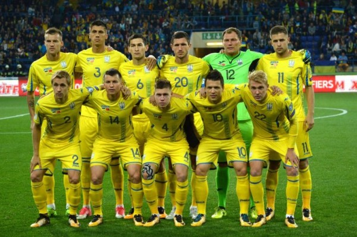

Україна потрапила до групи з Португалією на відбірковому етапі Євро-2020
Україна потрапила до групи В. Разом із нею опинилися Португалія, Сербія,
Литва й Люксембург. До того ж, команда Португалії — переможець Євро-2016.
У групі А зіграють збірні Англії, Чехії, Болгарії, Чорногорії й Косово.
У Групі С — Нідерланди, Німеччина, Північна Ірландія, Естонія й Білорусь.
Збірна Франції, що виграла чемпіонат світу з футболу-2018, потрапила
в одну групу з Ісландією, Туреччиною, Албанією та Молдовою. Основний
етап Євро-2020 пройде в 12 різних містах у 12 країнах Європи. Такий
формат турніру зробили на честь 60-річчя чемпіонату Європи з футболу.